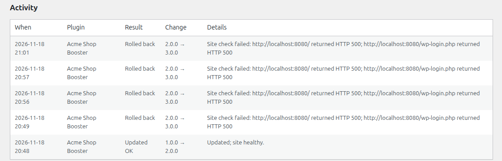
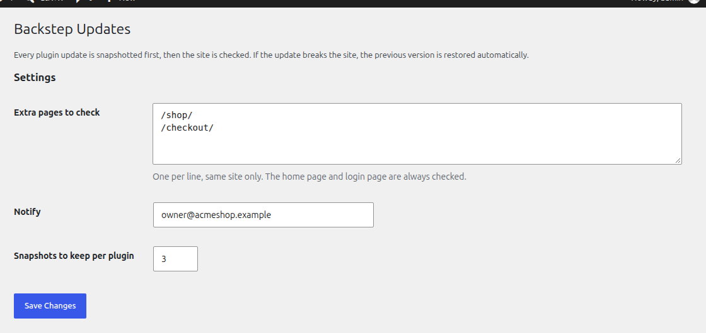
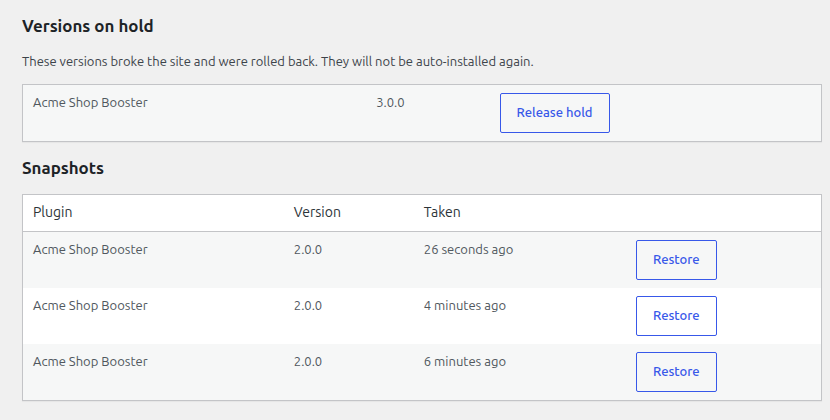

Update plugins without the fear.
Backstep saves a copy before every plugin update, checks your site right after, and restores the old version if something breaks.

Updates fix sites. They also break them.
You put it off
Skipped updates leave known problems unfixed. Fear of a broken site is the usual reason.
A bad one lands
A bug, or a clash with another plugin, and visitors see an error page.
You find out late
Nobody is watching at 3 a.m. The site stays down until someone notices.
A safety net around every update.
WordPress installs the update the way it always does. Backstep adds a copy before, a check after, and a way back.
Snapshot
The plugin's current files are copied into a zip archive just before they're replaced.
Install
WordPress installs the update as normal. Your workflow doesn't change.
Check
Home, login and any pages you list are requested. A server error or PHP fatal is a failure. Existing problems are ignored.
Keep or roll back
Healthy: nothing more happens. Broken: the old version returns, you get an email, the bad version is held.
Small, focused, on your side.
Snapshot before every update
Covers the Plugins screen, the Updates screen, bulk updates, automatic updates and WP-CLI. Keep as many past versions as you like.
Health check afterwards
Home page, login page and pages you add, such as /shop/ or /checkout/. Compared with how the site behaved before the update.
Automatic rollback
When an update causes a new failure, the previous version is restored before most visitors notice.
Version hold
A version that broke your site isn't installed automatically again. Release the hold when a fix ships.
Email alerts
Know the moment something is rolled back, even when you weren't looking.
Restore and log
Restore any snapshot in one click, and see a history of every update, rollback and restore.
Everything lives under Tools → Backstep.
One screen for settings, held versions, snapshots and history. These are real screenshots from a test site.

Choose auto-updates, exclude plugins, add pages like /checkout/, set an alert email.

See what's on hold and restore any saved copy with one click.
Every update, rollback and restore, with the reason.
You hear about it first.
By the time you read the email, the site is already back on the working version.
Plain about where it helps.
WordPress 6.6 and later already rolls back an automatic update that causes a fatal error. Backstep covers what that doesn't.
What Backstep doesn't do.
- It isn't a backup plugin. It stores plugin files only, not your database, uploads or themes.
- It only handles plugins. Themes and WordPress core aren't updated.
- It can't see every breakage. It looks for server errors and PHP fatals on the pages it checks, not a checkout that silently stops working. Add key pages to the list.
- Single sites for now. Multisite isn't supported yet.
Questions people ask.
Does it send data anywhere?
No. Backstep connects to no external service. The health check only requests your own home page, login page and the pages you list, on your own domain.
What if my site was already broken before the update?
Backstep compares against the state before the update, so existing problems don't trigger a rollback.
Where are snapshots stored?
As zip archives in a backstep-updates folder inside your uploads directory. They're deleted when you uninstall the plugin.
Why does it ask my site to clear the PHP cache?
Servers can keep an old compiled copy of a plugin for a few seconds, which would hide a problem. Before checking, Backstep sends a one-time request, secured with a random token that expires after 60 seconds, asking the server to clear its opcache.
Will it roll back a fine update that breaks one of my pages?
Only the pages it checks are considered. Add your shop or checkout under "Extra pages to check".
Does it cost anything?
The plugin is free and open source (GPL).
Install in a minute.
Upload, activate, and manual updates are protected straight away. Open Tools → Backstep to add the pages you care about.
Download v0.2.1 (.zip) Plugins → Add New → Upload Plugin → choose the zip → Activate